Wheel of Time Chapter Icons
- 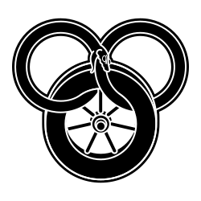Wheel-icon.svg
- The Wheel of Time: Used on title pages, as the chapter icon for prologues and some chapters, and at the end of chapters.
 A'dam-icon.svg
A'dam-icon.svg- A’dam, sul’dam, & damane.
- 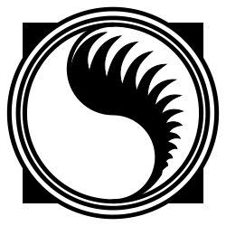Aessedai-icon.svg
- The ancient symbol of the Aes Sedai.
- 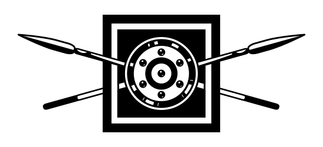Aiel-icon.svg
- Aiel.
- 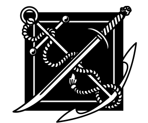Anchor-icon.svg
- Crossed anchor & sword: Egeanin.
- 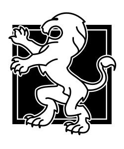Andoran-icon.svg
- The White Lion of Andor.
- 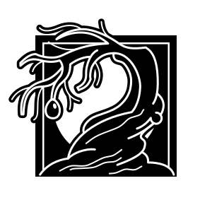Blight-icon.svg
- The Blight.
- 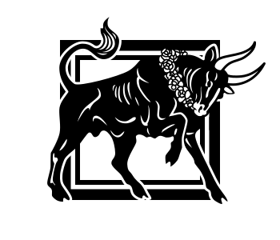Bull-icon.svg
- Gareth Bryne.
- 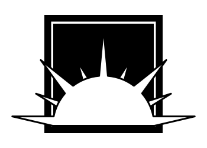Cairhien-icon.svg
- The Rising Sun of Cairhien.
- 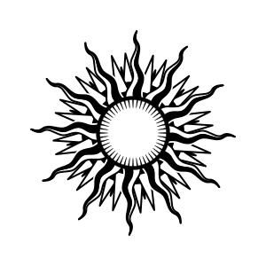Cotl-icon.svg
- Sunburst: the Children of the Light.
- 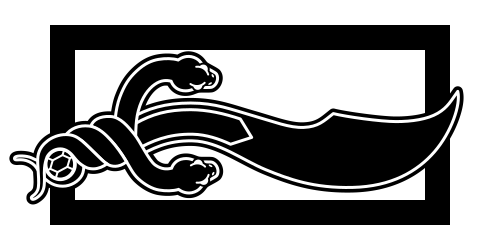Dagger-icon.svg
- Mat’s dagger from Shadar Logoth.
- 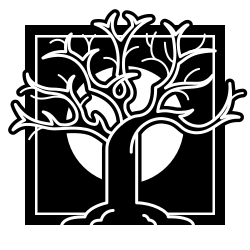Deadtree-icon.svg
- Dangerous forests.
- 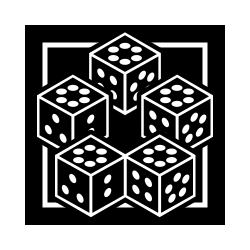Dice-icon.svg
- Mat’s dice.
- 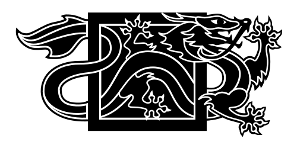Dragon-icon.svg 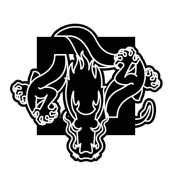Dragonoriginal-icon.svg
- Dragon; Rand. The alternate version was used in the first ed. of The Dragon Reborn.
- 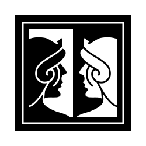Faces-icon.svg
- Black Ajah
- 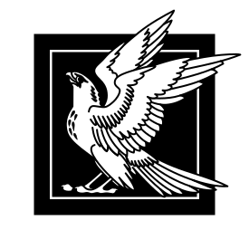Falcon-icon.svg
- Falcon; Faile.
- 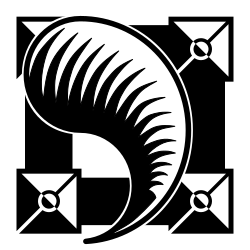Fang-icon.svg
- The Dragon’s Fang: Darkfriends, Asha’man, & false Dragons.
- 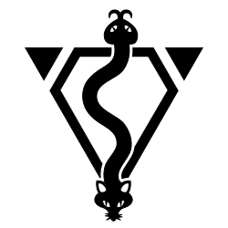Finn-icon.svg
- Aelfinn & Eelfinn.
- 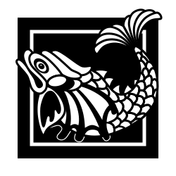Fish-icon.svg
- Fish: Siuan Sanche.
- 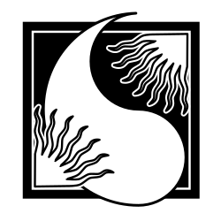Flame-icon.svg
- The Flame of Tar Valon: Aes Sedai, especially the Amyrlin Seat.
- 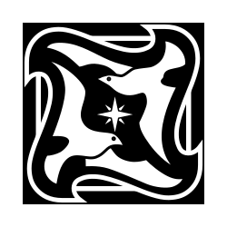Gulls-icon.svg 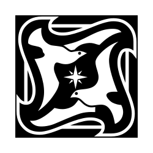Gullsrev-icon.svg
- Gulls: the Sea Folk. Occasionally reversed.
- 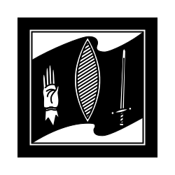Handandsword-icon.svg
- ????
- 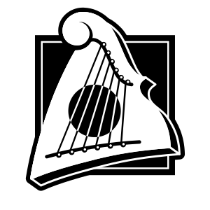Harp-icon.svg
- Thom Merrilin.
- 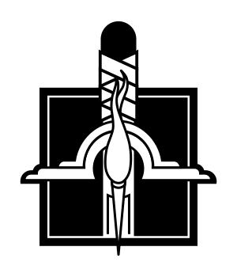Hilt-icon.svg 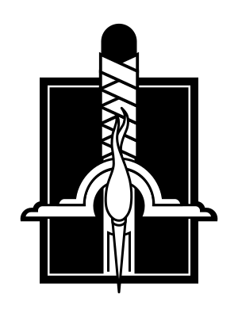Hilttall-icon.svg
- A heron-marked sword hilt. The longer version is used in The Dragon Reborn.
- 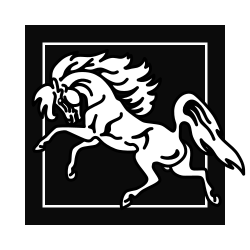Horse-icon.svg
- Horse.
- 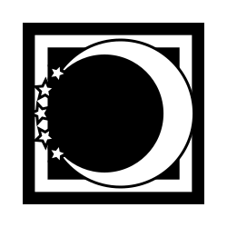Lanfear-icon.svg Lanfearrev-icon.svg
- Lanfear; reversed in some chapters in early editions.
- 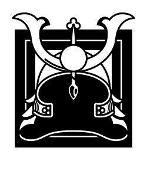Lans_helmet-icon.svg
- Lan’s helmet; used in New Spring.
- 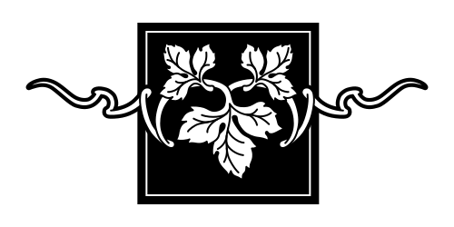Leaf-icon.svg
- Trefoil leaf of Avendesora: Cairhien, stedding, the Ways.
- 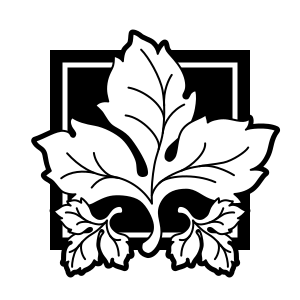Leaves-icon.svg
- Trefoil leaf of Avendesora: Tuatha’an, Ogier.
 Malden-icon.svg
Malden-icon.svg- Malden.
 Mice-icon.svg
Mice-icon.svg- Mice, especially when hidden in bedsheets.
- 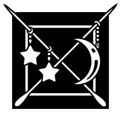Ornaments-icon.svg
- Cadsuane’s ter’angreal ornaments.
- 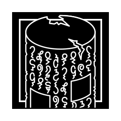Portal-icon.svg
- Portal Stone.
- 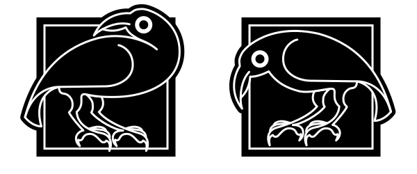Ravens-icon.svg
- Ravens; also Mat’s ashandarei.
- 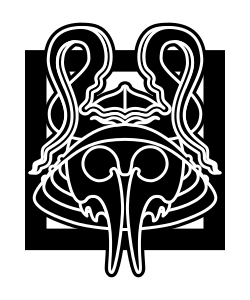Seanchan-icon.svg
- Seanchan.
- 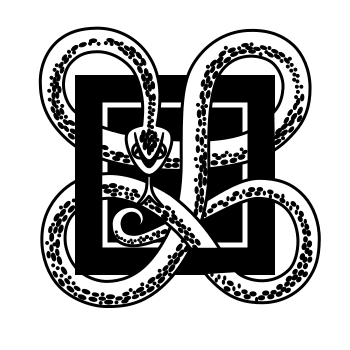Snake-icon.svg
- The Forsaken.
- 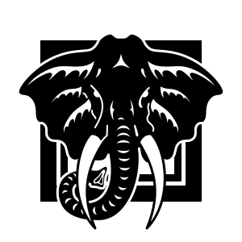Sredit-icon.svg
- S’redit: Valan Luca’s circus.
 Staff-icon.svg
Staff-icon.svg- Moiraine’s staff; used in The Eye of the World.
- 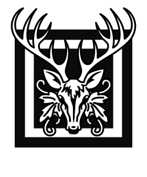Stag-icon.svg
- Stag: ????
- 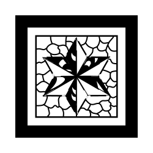Star-icon.svg
- Star: ????
- 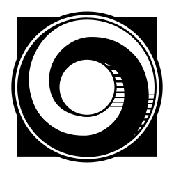Telaran-icon.svg
- Dream ring: Tel’aran’rhiod
- 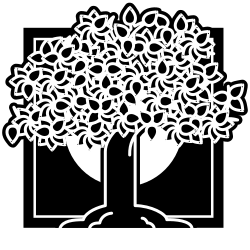Tree-icon.svg
- Tree; Ogier & stedding.
- 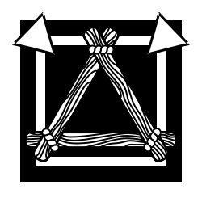Triangle-icon.svg
- ????
- 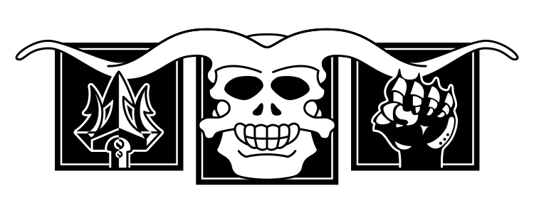Trolloc-icon.svg
- Shadowspawn.
- 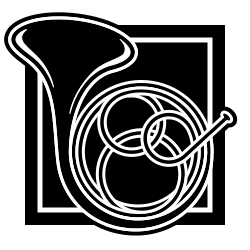Valere-icon.svg
- The Horn of Valere.
- 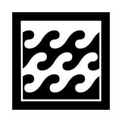Waves-icon.svg
- Waves: ships at sea.
- 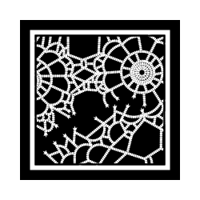Web-icon.svg
- The Age Lace unraveling: bubbles of evil.
- 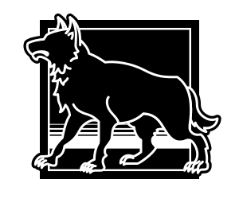Wolf-icon.svg
- Wolf; Perrin.

This work is licensed under a Creative Commons Attribution-ShareAlike 3.0 Unported License.
All images copyright © Tor Books and used with permission;
see http://linuxmafia.com/waygate/chapter-icons-permission.